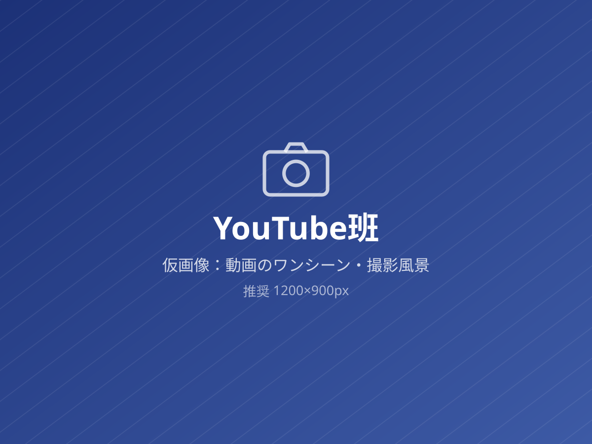

私たちは、東京科学大学の学生を中心とした有志チームです（上智大学の学生も1名参加しています）。東京科学大学の浜田省吾先生の研究室のもとで、大学院生のメンターから研究面の助言を受けながら活動しています。研究テーマの検討から実験、Webサイトや動画の制作、英語での発表まで、すべて学生が主体となって取り組んでいます。実験を担う「Wet班」、シミュレーションを担う「Dry班」、成果を発信する「Wiki班」「YouTube班」が連携し、一つのプロジェクトを形にしていきます。
OUR TEAMS
4つの班の紹介
 WET
WET実験でアイデアを確かめる
横浜キャンパスの浜田研究室で、実際にDNAを扱って実験を進めます。設計したDNA構造が狙いどおりに組み上がり、機能するかを確かめるのが役割です。うまくいかない結果からも原因を考え、Dry班と相談しながら設計の改良につなげています。
- 実験計画
- DNA構造の作製
- 評価・解析
- 結果の考察
 DRY
DRYコンピュータで分子を設計する
コンピュータシミュレーションやデータ解析によって、Wet班の実験データを補完します。分子の動きや反応をモデルで予測し、実験の設計にも役立てます。実験とシミュレーションを組み合わせることで、理論と実験の両面からプロジェクトを支えます。
- モデル化
- シミュレーション
- データ解析
- Wet班へフィードバック
 WIKI
WIKI研究を世界に伝えるサイトをつくる
BIOMODの審査で最も配点が大きい（100点中50点）、プロジェクト紹介サイト（Wiki）を制作します。英語の研究レポートを掲載するWebサイトを、構築から執筆まで自分たちで行います。研究の背景や設計、実験・シミュレーションの結果を、専門外の人にも伝わるよう図を交えて分かりやすく構成します。
- 構成・原稿づくり
- デザイン
- コーディング
- 公開・提出

YOUTUBE3分間でプロジェクトの魅力を届ける
研究内容を3分間で分かりやすく伝える、プロジェクト紹介動画を制作します（審査では100点中25点）。目に見えないナノの世界をどう表現するかを考え、企画・脚本づくりから撮影・編集までを一貫して手がけます。完成した動画はチームの YouTubeチャンネルで公開しています。
- 企画・脚本
- 絵コンテ
- 撮影・アニメーション
- 編集・公開
SCHEDULE
活動カレンダー
春にチームを結成して研究テーマを検討し、夏から実験・シミュレーションを本格化、9月の国内中間発表会（Japan Open）を経て、秋の世界大会（Jamboree）で成果を発表するのが1年の流れです。 大会の公式日程はBIOMOD公式ホームページで発表されます。
-
4〜7月
- 新メンバー募集・チーム結成
- BIOMOD 2026 チーム登録開始（〜6/1）
- 週数回のミーティングで、関連論文の読み合わせやアイデアの持ち寄り・議論を重ね、研究テーマを検討
-
8・9月
- 研究テーマが決まり、実験・シミュレーションを本格的に開始
- 大会への個人参加登録、プロジェクト名・要旨（Abstract）の提出（8/15〜9/15）
- 日本チーム限定の中間発表会「BIOMOD Japan Open」に参加。英語で発表・質疑応答を行い、副賞として現地滞在費の一部の支援を受ける
-
10月
- 世界大会出場に向けたクラウドファンディングを開始（〜11/9）
- Wiki・紹介動画の制作、英語でのプレゼンテーション・質疑応答のリハーサル
- 大会で着るチームTシャツの制作（BIOMODにはTシャツ賞もあります）
-
11月
- クラウドファンディング終了。目標金額を達成
- Wiki・YouTube動画の締切（以降は編集不可）
- BIOMOD Jamboree（メキシコ・ケレタロ／モンテレイ工科大学 ケレタロキャンパス）に出場
- 総合2位（Grand Prize 2nd）、Best Website 1位、Computational Biomolecular Design Award、Project Award 金賞を受賞
-
12月〜
- 大学や支援者の皆さまへの活動報告、お礼の発送
-
4月
- 新メンバー募集、チーム結成
- BIOMOD 2025 チーム登録開始（〜5/31）
-
5・6月
- プロジェクトテーマの決定（アビジン‐ビオチン結合を利用した弓状DNA変形法）
-
7〜9月
- 実験・シミュレーション
- Wiki・紹介動画の制作
- 大会への個人参加登録、プロジェクト名・要旨（Abstract）の提出（8/15〜9/15）
-
10月
- Wiki・YouTube動画の締切（以降は編集不可）
- BIOMOD Jamboree（中国・長春／吉林大学）に出場
- Gold Prize（金賞）を受賞
-
12月
- Science Tokyoニュースにて活動が紹介される